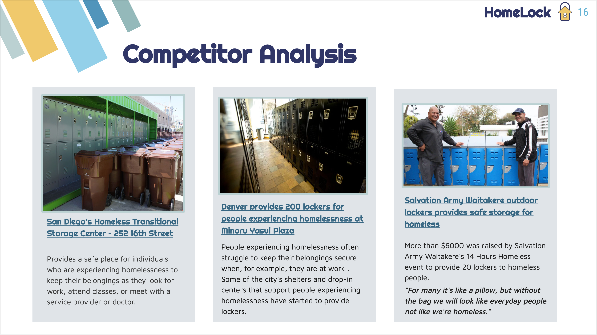
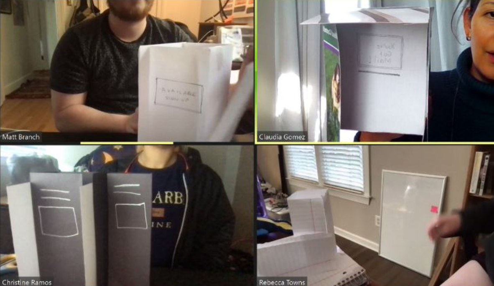
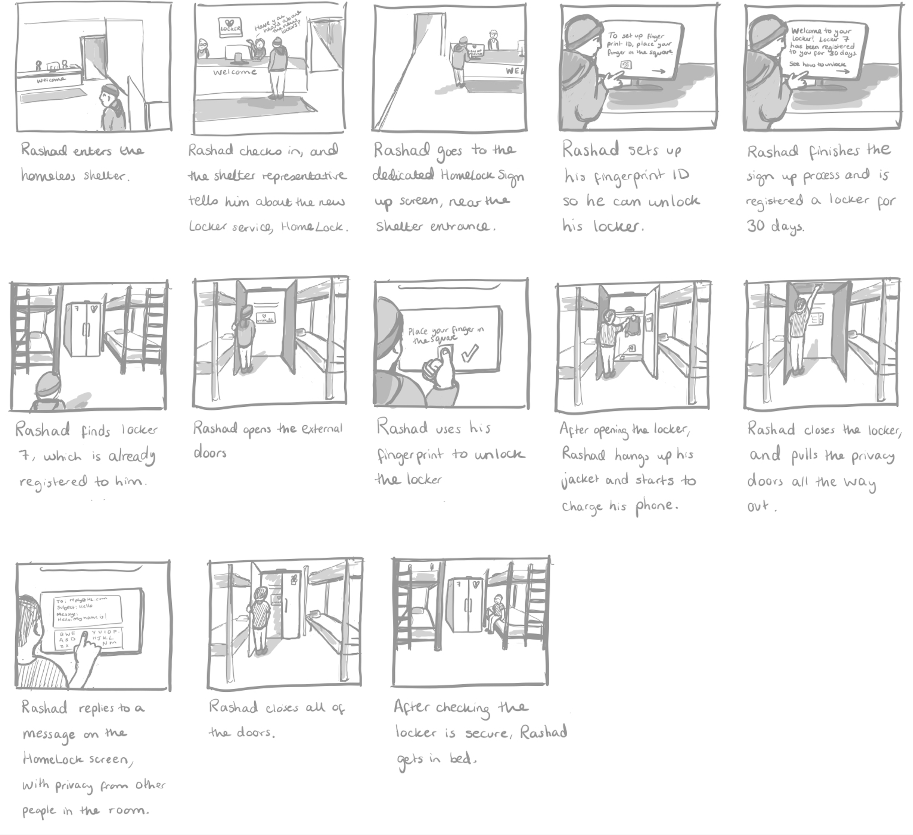
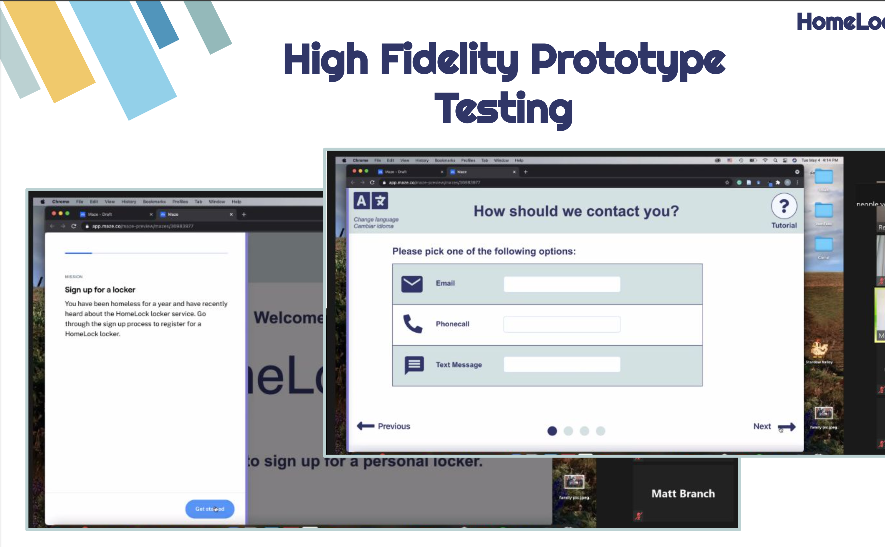
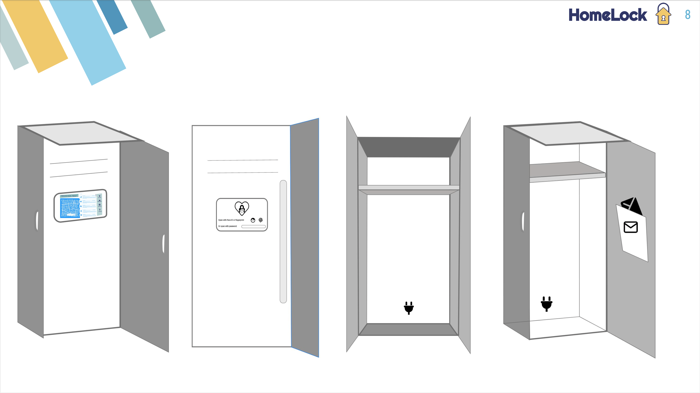
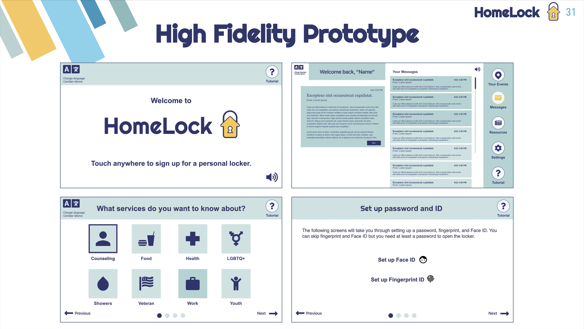

Homelock Service Design
HomeLock is an original service by myself and three other students in my graduate program. It is a secure storage space and communication hub intended for use by individuals experiencing homelessness, in collaboration with shelter organizations. We designed homelock with the full service spectrum in mind, from the physical environment to the required personel at all points of interaction. We spoke to professionals in the field who were interested in developing this in their organizations, which shows that there is an opportunity for making a difference with a service like HomeLock.
Walk through our interface design here: HomeLock Interface
Challenge
To design a new original service with the theme of kindness. This was a class project that allowed us to be creative and choose our own direction; we worked closely with social workers and non-profits to build a proposal that could ultimately be funded and developed.
Methodology
- Information gathering
- Field interviews
- UX Research
- Iterative prototyping
- Interaction design
Information gathering
My team used Mural to collaborate remotely at the background research stage. Getting a sense of a shelter environment at a time without physical access due to the pandemic was a challenge that we did our best to achieve via pictures and interviews with professionals in the field. Throughout this process we tracked our individual thoughts on notes to view as a whole and understand the entire team's direction.
Our competitor analysis was valuable in showing us what was feasible and where there were opportunities to go beyond storage space to provide a unique service. This is how the idea of a communication hub came about.

UX Research
Creating stakeholder and value flow diagrams allowed us to organize and gain a better sense of all the agents in this potential service. From these we chose to design a few representative personas to keep our minds open throughout this project. It was crucial to ensure we were not stereotyping, and this was one helpful way to redirect if we found our project focusing on the socially popular perception of a homeless individual. Service maps went through many iterations while we were developing the prototype, and were influenced by our other UX deliverables.
Prototype development
We used creative prototyping methods such as building the lockers with paper and card to present our ideas from remote locations.
I drew a storyboard to place our service in the environment from the end user's perspective. We also did some roleplaying exercises to reveal areas that needed more thought - for example, how would the service respond when the user had questions?

Critical feedback

We designed a test of our communication hub interface and contacted professionals in the field to walkthrough while we observed remotely. This allowed us to answer specific questions to make changes to the design, and to get feedback from people with greater insight into our intended audience. We made significant changes to the language used in our service as a result of these conceptual walkthroughs, in particular how we refer to people experiencing homelessness in order to achieve the level of respect we were striving for.
Final designs
You can walkthrough the communication hub interface design here: HomeLock Interface. We brought together our biggest goals (communication, secure storage, and privacy) from all of our research notes and deliverables. While designing we recieved a significant amound of critical feedback from experts and our professional partners.


Post-project reflections
This was a challenging project as we were limited in how much contextual inquiry and field research we could achieve. This service requires a lot of first hand experience with the intended customer population to be successful, so if it were to be funded for development it would require significant user testing in the next stage. We were cognizant of how important it is to respect individuals experiencing homelessness, and how easy it is to fall into stereotypes when thinking of this population as a whole. Homelessness is a complex issue that cannot be boiled down into a few personas or user journeys, so we had to strive to keep our minds open in other creative ways. The team had many different ideas and opinions which made for enthusiastic discussion and debate throughout the project timeline; converging on one design was difficult but I believe resulted in a promising design.